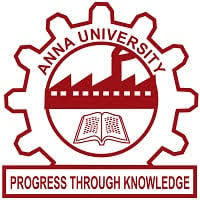
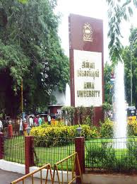

A Message from the Dean,
I am excited to welcome students, faculty and staff
back to campus for the start of the fall
2025 semester! The past few months have been
difficult for our entire community. And yet, as I reflect
back on our successes from the 2024-25 academic
year, I am entering the new semester with renewed
hope. I am pleased to share that over the past year,
the College hired two new faculty members, six new
staff members, and raised almost $2 million in grant,
private and corporate funding to support scholarship
and programming. In addition, we hosted both virtual
and in-person credential and commencement
ceremonies for over 1,900 educators. We continued
to grow our existing undergraduate programs such
as Titan Future Teachers and Men of Color in
Education, and we were able to provide free online
tutoring to over 3,000 students in the local
community. As you’ll see from additional success
stories included in this newsletter, I am incredibly
proud and honored to lead this College.
Welcome to the latest edition of the Anna university Newsletter! This issue aims to keep our vibrant community connected and informed about the exciting activities, achievements, and opportunities within our college. As we navigate the current semester, we encourage everyone to stay engaged, whether it's through academic pursuits, extracurricular activities, or campus events. We hope this newsletter serves as a valuable resource and a source of inspiration.
| Department | Staff's Name | Staff's email |
|---|---|---|
| CSE | dr.John | john@gmail.com |
| Mechanical | dr.Senthil | senthil@gmail.com |
| Ece | Dr.Raj | rajid@gmail.com |